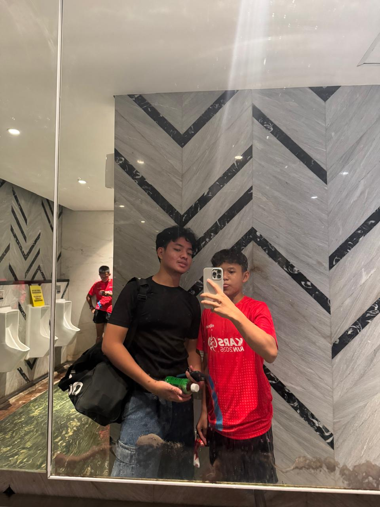

Student • Future Informatics Student • Basketball Enthusiast
Tempat, Tanggal Lahir
Bogor, 15 Maret 2010
Alamat
Bogor
No. Telepon
085123368898
Email
m.rifqonn@gmail.com

Saya adalah siswa kelas 11 di SMA Bintang Pelajar Islamic Boarding School.
Saya dikenal sebagai pribadi yang rajin, disiplin, serta memiliki semangat belajar yang tinggi.
Saya senang mempelajari hal-hal baru terutama yang berkaitan dengan teknologi dan komputer.
Di waktu luang saya aktif bermain basket karena olahraga ini mengajarkan kerja sama tim,
kepemimpinan, dan sportivitas. Setelah lulus SMA saya bercita-cita melanjutkan pendidikan
ke jurusan Informatika untuk mengembangkan kemampuan di bidang teknologi dan pemrograman.